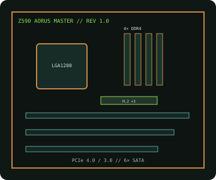

[ INDIVIDUAL COMPONENT // MOTHERBOARDS ]
GIGABYTE Z590 AORUS MASTER (rev. 1.0)
ATX Z590 board for Intel's LGA1200 desktop processors, pairing four DDR4 sockets with three M.2 positions, 2.5GbE and Wi-Fi 6E.

IDENTIFICATION: Exact model/revision is Z590 AORUS MASTER rev. 1.0. Read the PCB silkscreen and use the matching manufacturer support page.
Specifications
| Exact board / revision | GIGABYTE Z590 AORUS MASTER, rev. 1.0 |
|---|---|
| Socket / chipset / CPU | LGA1200, Intel Z590 Express; 10th and 11th Gen Intel Core desktop processors, subject to the exact CPU support list and BIOS. |
| Form factor | ATX, 305 × 244 mm. |
| Memory | Four dual-channel DDR4 DIMM slots; up to 128 GB unbuffered non-ECC. XMP and memory rates vary by CPU and validated module configuration. |
| PCI Express | Three PCIe x16-length connectors: primary CPU-connected slot supports PCIe 4.0 with an 11th Gen CPU and PCIe 3.0 with 10th Gen; lane sharing and lower slots follow the manual. |
| Storage | Three M.2 sockets, including CPU-attached PCIe 4.0 support with an 11th Gen CPU, plus six SATA 6 Gb/s ports; check socket/port sharing. |
| Networking / I/O | Aquantia 10GbE, integrated Wi-Fi 6E/BT, rear USB 3.2 including USB-C; audio and connector map are revision-specific documentation items. |
| BIOS / compatibility | Use rev. 1.0 BIOS and CPU list. CPU generation can change PCIe/M.2 capabilities; check minimum firmware and memory QVL for the selected processor. |
Compatibility and service notes
Both 10th and 11th Gen LGA1200 CPUs are supported subject to the rev. 1.0 CPU table. A 10th Gen processor does not provide CPU PCIe 4.0; some CPU-connected M.2 functions are generation-dependent. Install DDR4, then verify DIMM population, M.2 lane sharing and BIOS before assembly.
Record the board revision and firmware identifier; use ESD-safe service and never flash firmware intended for another AORUS model.
Manufacturer sources
- GIGABYTE — Z590 AORUS MASTER rev. 1.0 specificationsOfficial specifications, manual and board documentation.
- GIGABYTE — rev. 1.0 CPU support and BIOSConsult the qualified processor table and BIOS releases.